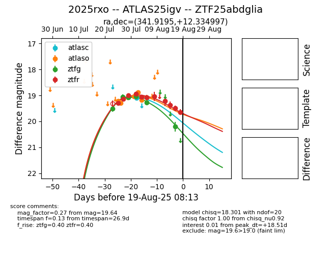

Target 2025rxo at 2025-08-07 20:58, see:
FINK: fink-portal.org/2025rxo
Lasair: lasair-ztf.lsst.ac.uk/objects/2025rxo
ALeRCE: alerce.online/object/2025rxo
TNS: wis-tns.org/object/2025rxo
YSE: ziggy.ucolick.org/yse/transient_detail/2025rxo
alt names
ZTF25abdglia (ztf,fink)
2025rxo (tns,yse)
ATLAS25igv (atlas)
coordinates:
equatorial (ra, dec) = (341.9195,+12.33500)
galactic (l, b) = (81.6555,-40.41479)
photometry
last atlasc=19.09, atlaso=19.05, ztfg=19.27, ztfr=19.07
1 atlasc, 6 atlaso, 5 ztfg, 6 ztfr detections
